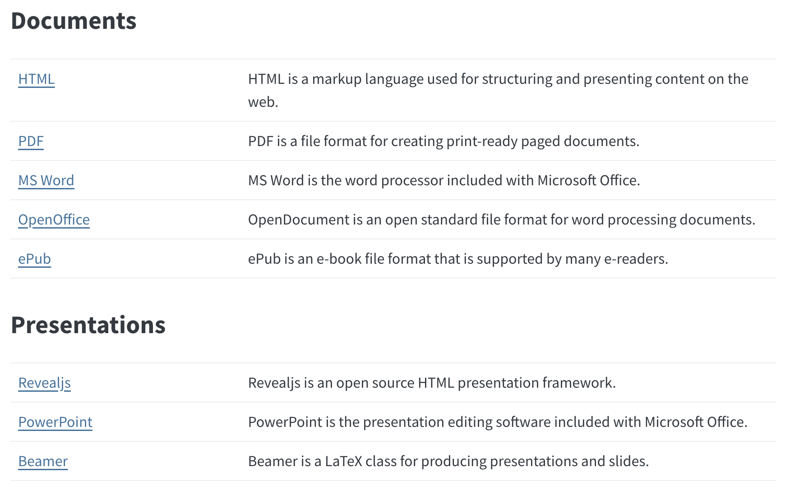

Let’s start with what Quarto is for. The core idea is that you write one document containing both your R code and the results that code produces, and Quarto assembles them into a finished report. These lecture notes are themselves written in Quarto, so you are looking at the output right now. The situation it is built for is the one you will actually be in: you have done an analysis and you need to show somebody, an advisor or a coauthor, both what you found and the code behind it. And this goes far beyond simple html documents; the gallery linked on the slide is worth a browse to see how far it stretches. The installation callout takes you to Quarto’s official getting-started page. Use that link if the Render button or Quarto commands are missing on your machine, because you need Quarto itself installed before any of the workflow in this lecture can work.
It lets you produce a single document containing both your R code and the results that code produces. These lecture notes are themselves written in Quarto.
It is useful when you need to report an analysis, together with the R code behind it, to your advisor or anyone else who reads R.
The power of Quarto goes well beyond just creating a simple html document. The full power of Quarto is on display here.
Quarto Installation
Visit here.
It is worth being explicit about the alternative, because most of you have lived it. You run your analysis in R, then you copy a piece of code into Word, then you copy the output, then a figure, and you do that thirty times. It is tedious, and worse, it is fragile: the moment you change one number in your analysis you have to find and redo every place it appeared. And the formatting almost never survives the paste. Quarto removes that entire loop. You write the code once, in the document, and the results appear where you put the code.
Doing so is tedious, because you have to copy and paste every piece of R code and every result into WORD manually.
Copied code and results are also badly formatted more often than not.
Quarto removes the need for that repeated copying and pasting, and lets you communicate what you did (the code) and what you found (the results) without fighting the formatting.
So how does this actually work? It is two steps, and that is worth holding onto because it explains everything that follows. Step one, you create a qmd file, which is a plain text file mixing ordinary writing with R code, and you use a special syntax to mark which parts are code so the computer can tell them apart. Step two, you tell the computer to process that file, either by clicking the Render button in RStudio or by calling quarto_render from the quarto package. At that point the computer runs your code, collects the results, and combines text, code, and results into one document.
Generating a report using Quarto is a two-step process:
Create a Quarto file (file with .qmd as an extension) with regular texts and R codes mixed inside it.
Tell the computer to process the qmd file (click a button in RStudio, or call the quarto::quarto_render() function)
Everything in a qmd file is one of two things: an R code chunk, or ordinary text. That is the whole model. What separates them is the special syntax in the callout, three backticks with r in curly braces, which fences off a piece of code and tells R to run it. Anything not inside that fence is treated as writing and passes through untouched. The Direction callout points you at sample_qmd.qmd, from the repository you cloned in the last lecture. Open it now and keep it open, because the rest of this lecture keeps pointing back at specific parts of it. In that sample, summary of cars and plot of pressure are each inside their own chunk fence. That is why R evaluates them as code instead of printing those expressions as ordinary text.
A qmd file consists of two types of input:
Direction
Take a look at sample_qmd.qmd, which is in the templates folder of the quarto-examples repository you cloned in lecture 02-0. Open it in RStudio and keep it open, because the rest of this lecture points at specific parts of it.
If you have not cloned that repository yet, go back to lecture 02-0 and do it now.
The R code summary(cars) and plot(pressure) are each enclosed in the special syntax
So, in this qmd file, R knows to treat them as code rather than as regular text.
Anything not enclosed in the special syntax is treated as regular text.
The word for turning a qmd into a finished document is rendering, and you will hear me use it constantly from here on. The easy way is the Render button at the top of the code pane in RStudio. There is also a programmatic route, in the callout, using quarto_render from the quarto package, which matters when you want to render as part of a script rather than by hand. One warning from experience: there is no plain function called render available by default, so if you type that you will get a could not find function error. In the command on screen, sample-underscore-qmd-dot-qmd is the file you are asking that function to render. The eval false option is there because this lecture is displaying the command as an example, not trying to render that sample file while the lecture itself is being built.
The process of compiling a qmd file to produce a document is called rendering.
Let’s put the input and the output side by side, because seeing the correspondence is what makes this click. On the qmd side there are three kinds of thing. At the very top, fenced by three dashes, is the YAML header, which controls the document as a whole. Then ordinary sentences, which are not fenced. Then a code chunk, which is. Now look at the html side. The YAML header itself prints nothing; it only shapes the document. The sentences come through as text. And the chunk contributes both its code and its results. Three inputs, three different fates.
Inspect the qmd file and its output document:
qmd side
--- at the very top: the YAML header, where you control the document as a whole (covered on the next tab) summary-cars chunk just below them: R code, enclosed in the special syntaxhtml side
summary-cars chunk: both the code and its results printedLet’s take the YAML header apart properly, because 02-2 and 02-4 both assume you can read one. Title, author, and date print at the top of the document, and date colon today fills in the render date automatically. The format key decides what kind of document you get. Underneath it are options belonging to that format: a table of contents, how deep it goes, whether sections get numbered, and embed-resources, which we come back to when we talk about submitting. Now read the callout, because it is the thing that actually breaks: YAML expresses nesting through indentation, and getting the indentation wrong is the single most common reason a header stops working.
The block at the very top, fenced by three dashes on either side, is the YAML header. It controls everything about the document as a whole.
---
title: "Reporting using Quarto"
author: "Taro Mieno"
date: today
format:
html:
toc: true
toc-depth: 2
number-sections: true
embed-resources: true
---title, author, date: printed at the top of the document (date: today fills in the render date automatically)format: html: what kind of document to producetoc: true: add a table of contentstoc-depth: 2: put headers down to the second level (##) in the table of contentsnumber-sections: true: number the section headers automaticallyembed-resources: true: produce a single self-contained html file (see the Submitting your html tab)Indentation matters
YAML uses indentation to express nesting. toc is indented under html, which is indented under format, because a table of contents is an option of the html format. Getting the indentation wrong is the single most common reason a YAML header stops working.
This is a small feature that changes how you write. You can drop an R expression directly into a sentence, using a backtick followed by r and then the code, and what appears in the output is the value. So instead of typing the cars dataset has fifty rows, you write an expression that counts the rows, and the number appears. The reason this matters is in the callout. When your data changes, and it always does, that number updates itself the next time you render. You never again go hunting through your prose for hard-coded numbers that are now wrong. The Direction callout sends you to the source of the sample document so you can compare the inline expression you type with the value that appears in the finished sentence.
You can refer to an R object defined earlier in the document and print its value inside a sentence, using this syntax:
which renders as:
The
carsdataset has 50 rows.
Why this is useful
If your dataset changes, the number in the sentence updates by itself the next time you render. You never have to hunt down hard-coded numbers in your text.
Direction
See the section “Inline code” and the inline-demo chunk. Look at how the sentence below that chunk is written in the source.
The writing itself is done in Markdown, and this table is the practical subset you need. Hashes make headers, and more hashes make smaller ones. Plus signs make bullets, numbers make numbered lists. Single asterisks give italic, double give bold, backticks give code style inside a sentence. Single dollars put maths in a line, double dollars put it on its own centered line. Square brackets followed by parentheses make a link, and the same with an exclamation mark in front inserts a figure. A citation key, such as at-sign smith-twenty-twenty inside square brackets, is the citation syntax you will learn in 02-4. Keep this table; it is the one slide you will come back to during an assignment. The Direction asks you to compare each row against the sample file.
| What you type | What you get |
|---|---|
# Big header |
a first-level header |
## Smaller header |
a second-level header |
+ item |
a bullet list item |
1. item |
a numbered list item |
*text* |
italic |
**text** |
bold |
`text` |
code style, in a sentence |
$y = a x + b$ |
math inside a sentence |
$$y = a x + b$$ |
math on its own centered line |
[UNL](https://www.unl.edu) |
a web link |
 |
insert a figure |
[@smith2020] |
a citation (covered in 02-4) |
Direction
Compare the section called “Markdown basics” in the qmd file with the corresponding output in the rendered html file. Every row of the table above appears there.
Now the single most important thing in this lecture, because it is what students get stuck on more than anything else. When you render, R starts a completely fresh session that has no connection to the one you have been working in. It cannot see objects you made in the console, and it cannot see packages you loaded by hand. So everything the document needs has to be created inside the document itself, in order, top to bottom: every library call, every dataset, every object. The callout gives you the habit that prevents this: restart R, then run all chunks. If that works, the document’s R code is likely reproducible, but rendering can still fail elsewhere.
When you render a qmd file, R starts a session that is completely independent of whatever R session you have open in RStudio.
This means the document cannot see objects you created by hand in the console, and cannot see packages you loaded by hand either.
What this means in practice
Everything the document needs must be created inside the document itself, in order, from top to bottom:
library() callThe habit that prevents this problem
Before you render, do this:
Ctrl/Cmd + Shift + F10)If that works in a fresh session, the document’s R code is likely reproducible, but rendering can still fail elsewhere. If it fails, you have found the missing library() or missing object before Quarto has to tell you about it.
You can give a chunk a name, using the label option on its own line inside the chunk. That is all there is to the syntax. It looks like a cosmetic detail and it is not, which is what the next tab is about. Notice the shape of it: the label goes on a comment line starting with a hash and a pipe, immediately after the chunk opens. That hash-pipe pattern is how every chunk option is written, so you are learning the general syntax here as well as this particular option. The example names the chunk read-corn-price because the code beneath it reads corn-underscore-price-dot-csv and stores the result in an object called corn-underscore-price. A descriptive label lets you recognize the job of the chunk without opening it.
You can give a code chunk a name using the label option:
Three reasons to bother labelling your chunks, and they compound. First, and most immediately useful, error messages become readable: when a render fails, Quarto tells you which chunk broke by name, and being told that read-corn-price failed is a great deal more helpful than being told chunk seven failed. Second, cross-references require labels; in 02-4 you will refer to figures and tables by number, and that only works if the chunk is named. Third, the caching options later in this very lecture point at chunks by label. Label everything, from today.
Error messages become readable. When a render fails, Quarto tells you which chunk failed, by name. Without labels, you get an unhelpful “chunk 7”.
Cross-references require them. To refer to a figure or table by number in your text (Chapter 02-4), the chunk must be labeled fig-something or tbl-something.
Caching options refer to them. The dependson option, later in this lecture, points at another chunk by its label.
Three rules, and they are short. Labels have to be unique within a document, which makes sense since the whole point is identifying one chunk. No spaces. And stick to letters, digits, and hyphens; write read-corn-price with hyphens rather than spaces or underscores. That hyphen habit is worth building now, because in 02-4 you will find that underscores silently break cross-referencing. The Direction points out that every chunk in the sample file is labelled, so you have several dozen examples to look at.
read-corn-price, not read corn price)Direction
Every chunk in sample_qmd.qmd is labelled. See the section “Chunk labels” and its labelled-example chunk.
Chunk options are settings that live inside a code chunk and control how that particular chunk behaves. The list on the slide is the set you will actually meet: echo, eval, message, warning, output, include, cache, and the figure options. Do not try to memorize what each one does from this list; we take them a few at a time over the next several tabs, each with a worked example in the sample file. The link goes to the complete reference, which is where you should look when you want something we have not covered.
Chunk options are settings placed inside an R code chunk that control how that chunk behaves.
Here are some example options:
echoevalmessagewarningoutputincludecachefig-cap, fig-height, etc See all the options here.
Before the syntax, let’s look at the effect, because that makes the syntax worth learning. Open the sample file at the section on code chunks and regular text and compare it against the rendered output. The first chunk, summary-cars, shows you both the code and its result. The second, plot-pressure, shows only the figure; the code that drew it is nowhere in the output. Same kind of chunk, completely different appearance. The only difference between them is one chunk option, echo set to false, on the second one.
Look at the section “R code chunks and regular text” in the sample file, and compare it with the rendered output:
summary-cars chunk: both the code and its result appearplot-pressure chunk: only the figure appears, not the code that drew itThe difference is the chunk option echo: false on the second one.
Here is the syntax for setting an option, and it is the hash-pipe pattern you already saw with labels. Immediately inside the chunk, on its own line, you write hash, pipe, the option name, a colon, and the value. So hash-pipe echo colon false hides the code. Now read the Caveat, because this one is genuinely maddening when it happens: there must be no blank line between the start of the chunk and its options. Put a blank line in there and the option is silently ignored. Nothing warns you; the chunk just behaves as though you never set it.
To set a chunk option, use the following syntax:
Example
The next few tabs go through the options one small group at a time, and each group has matching chunks in the sample file so you can see the difference rather than take my word for it. Echo and eval control whether the code is shown and whether it is run. Message and warning control whether R’s chatter reaches the reader. Output controls the results. Include is a convenient combination of several at once. And the figure options control size, alignment, and captions. Work through the tabs in order; they build on each other. In the echo and eval tab, echo true shows the code and echo false hides it, while eval true runs the code and eval false does not run it. The four named sample chunks show every combination, which matters because hiding code and preventing code from running are different jobs. In the next tab, message false suppresses messages and warning false suppresses warnings. The sample chunks deliberately produce both so you can compare exactly which kind of chatter each option removes.
Then look at output. Output true prints the results, including messages and warnings, output false hides all of those results while the code still runs, and output a-s-i-s inserts the result without Quarto adding its usual formatting. That last choice is for output that is already written as document content, so Quarto should not wrap it as ordinary printed output. The check chunk in the Direction callout proves that output false did not prevent evaluation. Include false is the all-at-once version for a chunk that must run but should contribute nothing visible: evaluation stays on, while code, output, warnings, and messages are all hidden. That is why it is so useful on a setup chunk that loads packages. The include-demo and include-demo-check pair in the sample makes that invisible evaluation visible to you. Finally, the figure tab separates four jobs. Figure-align chooses default, center, left, or right. Figure-width and figure-height set the drawing dimensions in inches, and figure-cap supplies the caption. Follow the Direction by changing the alignment or width in the sample, then render again so you see the option change rather than only reading its name. The link in that callout is the full figure-option reference for choices beyond these four.
echo ( true or false): whether the code itself appears in the output document
eval ( true or false): whether the code is run at all
Direction
See the section “echo and eval”. It has four chunks, echo-eval-both, echo-eval-no-echo, echo-eval-no-eval, and echo-eval-neither, showing every combination.
message (true or false ): whether messages produced while running the code appear in the output document
warning (true or false ): whether warnings produced while running the code appear in the output document
Direction
See the section “message and warning”. The chunks message-warning-both, message-warning-no-message, and message-warning-neither each emit the same message and warning, and differ only in which are suppressed.
output ( true , false, asis)
true: prints all results, including warnings and messages false: hides all results, including warnings and messagesasis: inserts output as raw Markdown without Quarto’s usual enclosing output containerDirection
See the section “output”. The output-demo chunk prints nothing, and the output-demo-check chunk right after it proves the code still ran.
include: false runs the code but shows nothing at all. It is equivalent to setting eval: true, echo: false, output: false, warning: false, and message: false all at once.
Common use
This is what you put on a setup chunk that loads your packages: the packages get loaded, but the reader is not shown a wall of library() calls and startup messages.
Direction
See the section “include”. The include-demo chunk shows nothing at all, and include-demo-check proves it still ran.
Chunk options for figures
fig-align: ‘default’, ‘center’, ‘left’, ‘right’fig-width: in inchesfig-height: in inchesfig-cap: figure captionDirection
See the fig-options chunk in the sample file, which sets all four at once. Change fig-align to left, or change fig-width, and render again. The full list of figure options is here.
Everything so far has been per chunk, which is fine until you want the same setting everywhere. If your instructor wants results without code, you do not want to type echo false into forty separate chunks. These tabs show the global route: an execute block in the YAML header that applies to the whole document. There is also a tab on code-fold, which I would argue is usually the better answer for an assignment, because it hides the code behind a button rather than deleting it, so I can still check your work. And a short note at the end on the precedence rule. In the YAML example, title and author still describe the report. Under format, the html block turns on a table of contents through level-two headings, numbers sections through level two, and uses the familiar html settings from the earlier YAML tab. The new part is execute, aligned with format at the top level. Echo false hides code throughout the document, while warning false and message false suppress those two kinds of diagnostic output throughout. The Direction has you add the echo setting to the sample and compare the echo-eval section before and after, so you can see a global default working across several chunks.
Now move to the code-fold tab. Code-fold true belongs inside the html format block because it changes how html displays code. It collapses each code block behind a Code button, so the report stays readable but the work remains available for inspection. Code-fold show uses the same folding interface but starts with the code expanded. Click the button on the sample’s code-fold-demo figure to see that this is a display choice, not removal of the code. The final callout gives you the precedence rule: a local option on one chunk overrides the global setting. That exception is what lets you establish a sensible document-wide default and still treat one chunk differently when it needs to be shown.
Sometimes it is useful to set chunk options that apply globally, to the entire document.
For example,
echo: true is the default.echo: false in every single chunk is a waste of time.You can set chunk options globally in the YAML header with the execute option like below:
Instead of removing the code from the document entirely, you can collapse it behind a “Code” button that the reader can click open:
code-fold: show to have it start expanded insteadFor this course
This is usually a better choice than echo: false for an assignment: I can read your results without the code in the way, and still check your code when I need to.
Direction
See the code-fold-demo chunk in the sample file, and click the Code button above its figure in the rendered html.
Important
A local option always overrides the global one.
This slide exists because at some point, probably late the night before something is due, a render is going to fail. So let’s make that a normal, survivable event. When rendering stops, Quarto prints an error in the Console or the Background Jobs pane, and two pieces of that message matter. First, which chunk failed, reported by its label, which is the concrete payoff for labelling everything. Second, the error itself, which is an ordinary R error of the kind you already know how to read: object not found, cannot open file, and so on. Read those two things before you change anything.
When rendering stops, Quarto prints the error in the Console or Background Jobs pane. Two things in that message matter:
object 'corn_data' not found or cannot open file 'corn_price.csv'Now the procedure. Go to the chunk it named, run that chunk by hand in the console, and read the error there where it is easier to see. Then ask which of three things it is. Could not find function means a library call is missing inside the document. Object not found means the object exists only in your console session, not in the document, which is the fresh-session problem again. And cannot open file is a path problem, which the Directory slides deal with. Nearly every render failure is one of those three, and the reminder at the bottom catches most of them before they happen.
could not find function ... : a library() call is missing inside the documentobject '...' not found : the object only exists in your console session, not in the documentcannot open file ... : a file path problem (see the Directory slides)Reminder
Restart R and run all chunks from the top. Most render failures show up immediately when you do.
One more tool for when things break. By default a single failing chunk stops the entire render, which is usually what you want but occasionally is not. Setting error true on a chunk tells Quarto to print the error into the document and carry on building. Two uses. First, when you are deliberately demonstrating an error, which is exactly what the sample file does with log of a. Log expects a numeric value, so giving it the character a produces the error you see. Second, and more practically, when several chunks are broken and you want to see all the failures in one render instead of fixing them one at a time.
By default, one failing chunk stops the whole render. Sometimes you want the document to build anyway and show the error where it happened:
Direction
See the error-demo chunk in the sample file. It calls log("a"), which fails, yet the document still builds and shows you the error.
Here is a problem you will have as soon as your analysis gets slow. While writing a report you hit Render many times, checking whether things look right, and every single time, every chunk runs again from scratch, even the ones that have not changed. Caching fixes that: set cache true on a chunk and R stores its results, then reuses them instead of re-running the code. The longer a chunk takes, the more this matters. Note the syntax carefully, cache colon true in lower case, in the hash-pipe style, not the older double-equals TRUE form you may see in older material.
You are going to hit the “Render” button many times while writing a report, to check whether the output looks right.
Every time you render, all the R code chunks are evaluated again, even though R has already evaluated them before.
Caching stores the results of a chunk so that R can call up the saved results instead of re-running the code. The longer the code takes to run, the more time this saves.
Turn it on with the chunk option cache: true.
Let’s watch it happen rather than take it on trust. The Direction asks you to switch the cache_1 chunk from eval false to eval true and render. You will see sample_qmd_cache appear next to your document, which is where the stored results live. The separate sample_qmd_files resource folder comes from an ordinary non-embedded render and holds the document’s figures and other resources, not its cached results. Then render a second time without changing anything, and notice how much faster it is. That difference is the cached chunk being skipped. Once you have seen the cache folder appear you will also recognize it when you need to delete it, which is coming up in two tabs.
Direction
eval: false to eval: true in the cache_1 chunkNow the trap, and it is the reason caching has a bad reputation. If you change the code inside a cached chunk, R notices and re-runs it. That part is reliable. But if the code stays exactly the same while the data it uses has changed, R does not notice, because all it compares is the text of the code, not the contents of your objects. So it hands you the old result, silently, and it looks correct. The Direction walks you through producing exactly that failure on purpose, which is the fastest way to learn to distrust a stale cache. First change eval false to eval true in cache-underscore-two and render. Then, in cache-underscore-one, change y gets one plus x plus v to y gets one plus two times x plus v. Cache-underscore-one re-runs because its own code changed, so MC-underscore-results changes. Cache-underscore-two still prints its old number because the text inside cache-underscore-two did not change. That mismatch is the stale result the next tab fixes.
If you change the code inside a cached chunk, R notices and re-runs it. That part is automatic and reliable.
If the code stays the same but the data it uses has changed, R does not notice. R only compares the text of the code, not the contents of your objects. You get the old, stale result.
Direction
eval: false to eval: true in the cache_2 chunk and rendery <- 1 + x + v to y <- 1 + 2 * x + v in cache_1 and render againMC_results is now a different numberThere is a proper fix for what you just saw. The dependson option lets you declare that one cached chunk depends on another, so when the first one re-runs the second is forced to re-run as well. Add dependson pointing at cache_1 to the cache_2 chunk and the stale-number problem goes away. But read the second callout, because it is the honest advice: when you are in any doubt, just delete the cache folder and render again. Caching is an optimization, and correctness comes first. Nobody ever lost marks for a render that took an extra minute.
You can tell R that one cached chunk depends on another, so that a change in the first forces the second to re-run:
Direction
Add dependson: cache_1 to the cache_2 chunk as an option and render again.
The simplest fix
When in doubt, delete the _cache folder and render again. Caching is an optimization; correctness comes first.
One related idea, which is useful when you work with a multi-document project. Cache speeds up repeated renders of a single document. Freeze solves the neighbouring problem: when you have a whole website or project made of many documents, you do not want to rebuild all of them every time you edit one. Putting freeze auto in _quarto.yml means only the documents whose source has actually changed get re-rendered. If you build a website and find yourself waiting through a full rebuild for a one-line edit, this is the setting you want.
cache speeds up repeated renders of one document. When you have a whole Quarto website or project of many documents (Chapter 02-3), you want something else: freeze stops a document from being re-rendered at all unless its source has changed.
Put this in _quarto.yml and only the documents you have actually edited get re-rendered when you rebuild the site.
here (recommended)Now file paths, which is where cannot open file errors come from. The default rule is simple: R looks for the file in the same folder as the qmd file, not wherever your console happens to be pointed. The slide shows this concretely with the actual folder the sample file lives in, and the full path R would therefore try. If the file is not at that exact location, the read fails, and everything downstream that needed the data fails with it. The next four tabs are three ways to handle this, in increasing order of how much I recommend them. In the example chunk, read-dot-csv receives only corn-underscore-price-dot-csv, so no folder has been supplied. Eval false keeps this teaching example visible without asking the lecture deck to open a data file that is not there. The blue text first names the templates folder containing the qmd, then corn-underscore-price-dot-csv in that same folder to show the exact location R would try.
Suppose you want to read a dataset like this:
Important
By default, R looks for corn_price.csv in the same folder in which the qmd file is located.
In its repository, sample_qmd.qmd is located in the templates folder.
This means that R tries to find corn_price.csv in that same templates folder.
If the file is not there, R cannot import it and returns an error. Everything downstream that depends on the dataset fails too.
Option one is to put your data in the same folder as your qmd and refer to it by name alone. It is the simplest thing that works and it is genuinely fine for a single short assignment, so do not feel bad about using it this week. But read the callout, because it has a shelf life. As soon as a project has more than a handful of files you will want data in one folder, code in another, and output in a third, and at that point this approach stops working. Later in the course we set projects up that way, and then option three is what you use. The chunk repeats read-dot-csv with only the file name, and eval false again keeps the example from trying to read a file while this lecture renders.
Put the datasets you intend to use in the same folder as your qmd file, and refer to them by name alone:
But not for long
Once a project has more than a handful of files, you will want data in its own folder, code in another, and output in a third. Later in this course we set projects up that way, and then Option 3 below is what you use.
Option two is to write out the entire path from the root of your hard drive, and I am showing it to you mainly so you recognize it and avoid it. Look at the example: it has my username in it. That is the problem in miniature. It breaks the moment you rename any folder above it, it breaks on anybody else’s computer including mine when I am grading, and it breaks on your own second machine. If you find yourself typing a path that starts with Users or C colon, stop. Eval false prevents the lecture from actually trying this instructor-specific path. Its presence is another clue that the code is here for comparison, not as a path you should copy.
You can spell out the entire path to the file:
Why to avoid this
Option three is the one I recommend, and it is the here package. Rather than starting from your hard drive or from the qmd’s own folder, here builds paths from the project root, which is the folder holding your Rproj file or your _quarto.yml. You write here, then the folder and file names as separate pieces, and it assembles the right path. It works no matter which subfolder the document sits in, it works on any computer because nothing above the project root is written down, and it works whether you render or run chunks by hand. If you are unsure what it decided the root was, run here on its own in the console. Read the code from the inside out. Library here makes the package available, then here receives data and corn-underscore-price-dot-csv as two path pieces, and that constructed path is passed to read-dot-csv. Eval false leaves the example unevaluated because this deck does not contain that data file. In the check callout, here colon-colon here names the function together with its package, and empty parentheses ask it to show the project root with no extra path pieces attached. The Direction points you to both path styles in the sample, where they are also displayed but not run.
The here package builds paths starting from your project root: the folder containing your .Rproj file or _quarto.yml.
Check what it resolved to
Run here::here() on its own in the console to see which folder it decided is the project root.
Direction
See the section “Reading a data file” in the sample file. The read-relative chunk uses a plain file name and read-here uses here(). Both are set to eval: false, so they are shown but not run.
One alternative worth knowing if you are working on a whole project rather than a single document. Nesting execute-dir project under project in _quarto.yml makes every document run as though it were sitting at the project root, so a plain relative path like data slash corn_price works from anywhere in the project. It solves the same problem here solves, which is exactly why the note warns you to pick one and not both. Mixing them means you can no longer tell at a glance which folder any given path is starting from, and that confusion is worse than either approach on its own.
If you would rather have every document in a project run as if it were sitting at the project root, set this once in _quarto.yml:
Then read.csv("data/corn_price.csv") works from any document in the project. This is a project-wide setting, so use it instead of here, not alongside it, to avoid confusion about which folder paths start from.
This slide is about handing work in, so it matters for your grade. When you render my_report.qmd you get two things, not one: the html file, and a folder called my_report_files holding every figure, stylesheet, and script the document needs. The callout is the part to remember. The html file on its own is not the whole document. If you email me just the html, or upload just the html, the figures will be missing when I open it, and you will have submitted a report with holes in it without ever knowing.
Render my_report.qmd and you get two things in the folder:
my_report.html : the documentmy_report_files/ : a folder holding every figure, style sheet, and script the document needsThey travel together
The html file by itself is not the whole document. Email only my_report.html, or upload only that file, and your figures will be missing when I open it.
The fix is one line in the YAML header: embed-resources set to true, indented under html. That tells Quarto to pack local resources such as figures, styles, and scripts inside the single html file. It gets bigger, but you can email or upload that one file and you no longer need the files folder. The math library is not embedded by default, so add self-contained-math true under html if it must also work without a network connection. Read the callout: embed-resources is required for everything you submit in this course. Set it once at the top of every assignment and then submit the single html file.
Add one line to the YAML header:
_files folder at allself-contained-math: true under html: if the math library must also be embeddedRequired for this course
Use embed-resources: true for every assignment you submit. Then submit the single .html file.
And here is how to be certain before you submit, which takes about thirty seconds. Render the document. Then move only the html file, by itself, to your Desktop, away from its folder. Open it there and look. If the figures are still present, the file is genuinely self-contained and safe to hand in. If they have vanished, embed-resources is either missing or in the wrong place in your YAML, most likely indented incorrectly. Do this check the first few times until you trust your own header. The Direction gives you a controlled comparison: add embed-resources under html in sample-underscore-qmd-dot-qmd, render, and notice both that the html file becomes much larger and that it no longer needs the sample-underscore-qmd-underscore-files folder. The larger size is evidence that those resources have been packed into the file.
.html file to your DesktopIf the figures still show up, you are safe to submit. If they do not, embed-resources: true is missing or misplaced in the YAML.
Direction
sample_qmd.qmd deliberately does not set embed-resources. Add it under html: in the YAML header, render, and compare: the html file gets much larger, and the document no longer depends on the sample_qmd_files folder.
A qmd is not tied to one kind of output. The same source can become html, PDF through several different engines, Word, and a good deal else; the link on the slide has the full list and the screenshot shows the range. But read the callout, because it sets the policy for this course. We use html, and html is what you submit. There is a specific reason beyond convenience: html has no concept of a page, so you never have to fight to make a table or a figure fit inside a fixed rectangle, which is a real and recurring cost with PDF and Word.
A qmd file can be rendered to many different formats, using different engines. See here for the full list of document types.

Important
Producing a different format is two steps. Step one, add the format under the format key in the YAML header, and the example shows three at once: html with its options, docx taking the defaults, and typst with page size, margins, and columns specified underneath it. Notice the pattern, that a format either takes default or has its own indented block of options. Step two, back in RStudio, there is a small downward triangle next to the Render button, and that is where you choose which of your declared formats to build. Read the header from the top. Title and author describe the report. The html block adds a table of contents through level-two headings, numbers sections through level two, and embeds the resources so the html is self-contained. Docx default asks for a Word document without custom Word options. The typst block asks for a PDF on A5 paper, with one-centimeter horizontal and vertical margins and two text columns. Those options are indented under typst because they apply only to that format. The Direction asks you to add the docx and typst entries to your own qmd; after that, the Render menu can offer all three declared outputs.
Step 1
To produce a given output type, add the appropriate option under format in the YAML header, as below.
---
title: "Reporting using Quarto"
author: "Taro Mieno"
format:
html:
toc: true
toc-depth: 2
number-sections: true
number-depth: 2
embed-resources: true
docx: default
typst:
papersize: a5
margin:
x: 1cm
y: 1cm
columns: 2
---Here,
docx option) is produced with the default settings. typst option) is produced using the settings listed under typst:.Direction
Add the docx option and typst options in the YAML above to your qmd file.
Step 2
You should see a downward triangle to the right of the Render button. Use it to choose which format to render.
One caution to close the slide with. The YAML options and chunk options that are available are not the same across formats and engines. An option that works beautifully for html may be meaningless for Word, or spelled differently for PDF. So when something you copied from elsewhere quietly does nothing, the first thing to check is whether that option exists for the format you are actually producing. The link goes to the per-format reference, which is where to look rather than guessing.
The YAML and chunk options available differ by output format and engine. See here for the options specific to a particular format.
That is the tour of Quarto’s basics. Where to go next: the official Quarto website is genuinely the best resource, and I have split the links by what you will actually be looking for. The guide is for syntax, both general and specific to a document type. The reference section is for YAML options for a particular format. And the cell options page is the complete list of chunk options, which is the one you will want open while doing the assignment. Everything in this lecture is in there, along with a great deal more.
The best resource for learning Quarto is its official website: